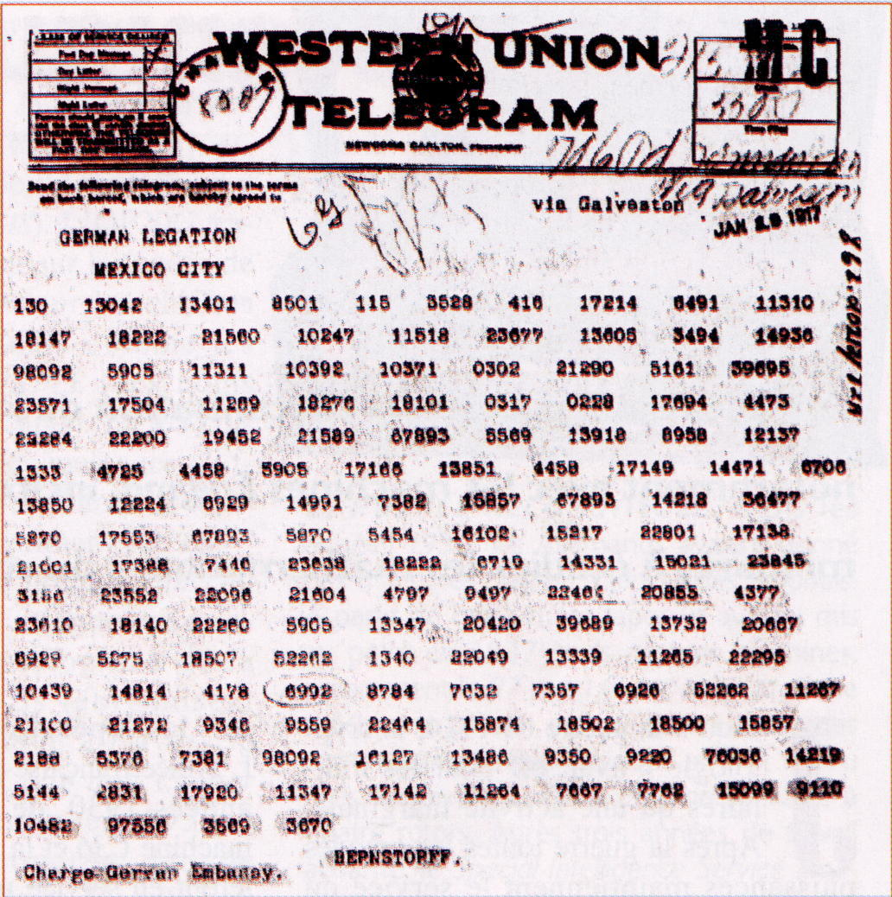

L'affaire du télégrammme de Zimmermann - Cryptographie et diplomatie

Nous sommes en janvier 1917. La guerre entre l'Allemagne et les Alliés fait rage. Le conflit s'enlise, les tranchées ennemies se font face. De l'autre côté de l'Atlantique, les États-Unis sont prudemment restés neutres. En 1916, le président Woodrow Wilson a d'ailleurs été réélu avec le slogan He kept us out of the war (il nous a préservé de la guerre). Il a même déclaré que ce serait "un crime contre la civilisation" de laisser entraîner les États-Unis dans la guerre.
En ce mois de janvier 1917, l'état-major allemand s'impatiente. Il propose au Kaiser de déclencher une guerre sous-marine totale, afin de couper les approvisionnements de l'Angleterre. Le problème pour l'Allemagne est qu'en coulant de nombreux bâteaux civils américains, cette stratégie aurait pour probable conséquence l'entrée en guerre des États-Unis. Arthur Zimmermann, alors ministre allemand des affaires étrangères, a une idée afin de retarder l'envoi de renforts américains : il faut occuper les troupes américaines sur d'autres fronts, créés par le Mexique et le Japon. Ainsi, si le Mexique envahit le sud des États-Unis (les 2 pays ont alors un contentieux autour de certains territoires), avec le soutien logistique, financier et militaire allemand, l'armée américaine sera toute accaparée par la défense de son propre territoire, et ne pourra intervenir en Europe.
Le 16 janvier 1917, Zimmermann envoie un télégramme codé à pour faire part de son projet à Bernstoff, l'ambassadeur d'Allemagne aux États-Unis. L'armée anglaise ayant coupé dès le début de la guerre les cables transatlantiques allemands, le télégramme suit un chemin compliqué, passant par la Suède (pays qui pourtant se revendique neutre) et l'Amérique du sud. Mais les cables entre la Suède et l'Amérique du sud passent à proximité des iles britanniques, et les anglais ont tout loisir d'écouter les messages envoyés.
Le télégramme de Zimmermann éveille tout de suite leur attention. Le Bureau 40, nom donné au service du chiffre anglais, dirigé par le révérend Montgomery, reconnait qu'il a été codé avec le code diplomatique allemand 0075. Il s'agit d'un code de substitution désordonné assez simple, mais qui comprend 1000 substitutions possibles. Comme sa mise en service est récente, seul un déchiffrement partiel du télégramme fut possible. Et voici ce que les anglais ont lu :
Nous avons l'intention de déclencher le 1er février la guerre sous-marine totale. Ce faisant, nous essayerons cependant de maintenir l'Amérique dans la neutralité. Au cas où ne pourrions y parvenir, nous proposons (au Mexique?) une alliant sur les bases suivantes :
-mener la guerre (ensemble?)
-conclure la paix (ensemble?)
(…)
Pour l'instant, Votre Excellence devra informer secrètement le président (du Mexique?) (que nous estimons?) la guerre avec les USA (possible?) (…) et simultanément proposer sa médiation entre nous et le Japon (…) nos sous-marins contraindront l'Angleterre à la paix en peu de mois.
Zimmermann.
Les anglais sont convaincus que si les États-Unis sont mis au courant que l'Allemagne ourdit un tel complot contre eux, ils vont entrer en guerre au côté des alliés. Cependant, ils ne peuvent révéler immédiatement le contenu du télégramme pour plusieurs raisons. D'une part, ils ne l'ont déchiffré que partiellement, rendant possible des erreurs d'interprétation. D'autre part, s'ils révèlent la source de ce télégramme, les allemands comprendront que leurs télégrammes chiffrés sont lus et changeront leurs codes, alors que les anglais ont tout intérêt à continuer à pouvoir lire les messages allemands. Enfin, les anglais seraient obligés de révéler qu'ils espionnent les envois d'un pays neutre, ce qui les mettrait dans l'embarras.
Le capitaine Hall, qui dirige le service de renseignement naval, trouve un moyen de surmonter ces problèmes. D'après ce que les anglais ont compris, le télégramme de Zimmermann doit être transmis entre Bernstoff, l'ambassadeur d'Allemagne aux États-Unis, et Eckardt, son homologue au Mexique. Grâce à un espion, il arrive à se procurer une copie du message envoyé entre les deux hommes. Il a été chiffré avec un autre code diplomatique, beaucoup plus faible que le code 0075, et que le Bureau 40 connait bien. Ainsi, les anglais accèdent à une lecture complète du télégramme de Zimmermann, par une autre source, et tous leurs inquiétudes décrites précédemment n'ont plus lieu d'être.
Ils peuvent alors informer les États-Unis du complot, en leur révélant le télégramme sous la forme suivante :
Toute la presse nord-américaine répand l'information le 1er mars, et Zimmermann lui-même confirme l'authenticité de ce message. L'opinion publique, désormais prévenue des intentions allemandes, change d'avis, et le Président Woodson fait voter par le Congrès, le 6 avril 1917, une déclaration officielle de guerre à l'Allemagne. Et voila comment la cryptanalyse d'un message codé a changé le cours de l'histoire!